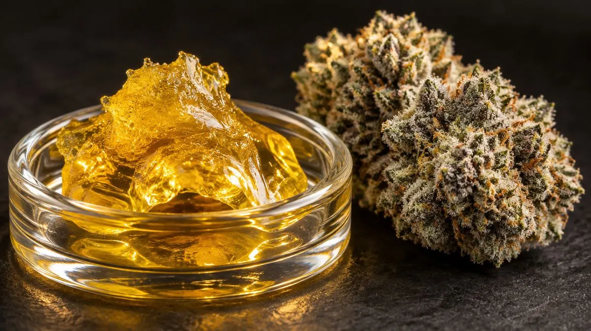

Local guides · 7 min read
Best Infused Pre Rolls in Westchester
An infused pre roll is flower rolled in a cone with cannabis concentrate added, mixed through the grind, coated on the outside, or run down the middle as a core. The concentrate is why it hits harder than a regular cone.
The three types you will find on the shelf are hash infused, live resin infused, and distillate infused. Hash and live resin bring flavor along with the potency. Distillate brings potency and almost no flavor.
This is the follow up to our guide to pre rolls in Westchester, which covers the regular kind. Below is what infused actually means and which type to pick.
What to know up front

- Infused pre rolls in the New York market commonly test in the 35 to 50 percent THC range, roughly double a standard flower cone, depending on the concentrate and how much went in.
- Hash infused means solventless concentrate, made with ice water or heat and pressure. Live resin infused means the concentrate came from fresh frozen plants. Distillate infused means stripped, flavorless THC oil.
- Infused cones need relighting more often, because concentrate does not burn at the same rate as paper and flower.
- Every infused pre roll on a licensed New York shelf carries a lab tested Certificate of Analysis for potency and contaminants.
- Toke carries infused cones at 471 McLean Ave in Yonkers and 2 S Central Ave in Spring Valley, and the lineup changes weekly.
What does “infused” actually mean in a pre roll?

Concentrate is cannabis with the plant material removed, so what is left is mostly resin. Infusing a pre roll adds some of that resin back into a joint of ordinary flower.
Producers do it three ways. They mix concentrate into the ground flower before rolling, which spreads the potency evenly. They coat the outside and sometimes roll it in kief (the loose trichome dust that falls off dried flower), which is the moonrock or caviar cone. Or they run a thin line down the center, labeled a core or a donut. The center core burns most evenly and the outside coating least, because concentrate on the paper melts ahead of the flower inside.
None of this changes the flower underneath. A cone built on mediocre flower with distillate sprayed on it still tastes like mediocre flower, which is the same argument we make in our post on what THC percentage actually means.
Hash infused, live resin infused, or distillate infused: what is the difference?

Hash infused uses solventless concentrate. Ice water hash is made by agitating cannabis in ice water until the trichome heads break off, then drying and pressing them. Nothing but water, ice, heat, and pressure touches it. These cones taste the closest to the plant, with a heavy resinous flavor that gets richer as it burns down. They cost the most and sell out the fastest.
Live resin infused uses concentrate from plants frozen right after harvest instead of dried and cured. Freezing preserves the volatile terpenes that evaporate during drying, so live resin is loudest on flavor: fuel, citrus peel, sharp fruit. Our live resin cart guide goes deeper on fresh frozen material.
Distillate infused uses THC oil stripped down to a single compound. It is nearly odorless and nearly tasteless. Some producers add botanical terpenes back in, which is why a distillate cone can taste faintly like a fruit candy that resembles no actual strain. It is the cheapest way to a high THC number and the one to skip if flavor is why you smoke.
Which infusion type should you buy?

Pick live resin infused if you care about taste. The difference against a distillate cone is obvious in the first pull.
Pick hash infused if you want the heaviest, most full spectrum smoke and do not mind paying for it. Solventless costs more because the process wastes more plant material.
Pick distillate infused if the priority is a strong, cheap cone and you are not precious about flavor. Plenty of people buy these on purpose and like them.
If you have never had an infused pre roll, start with half of one and wait. Forty percent THC on a joint is a different experience than 22 percent flower. Our post on how to choose what is right for you applies the same logic across categories.
How strong is an infused pre roll compared to a regular one?

Regular flower cones from New York growers mostly test between 18 and 28 percent THC. Infused cones commonly land between 35 and 50 percent.
The number on the label is total THC for the whole cone, not a promise about how you will feel. A hash infused cone at 38 percent often feels stronger than a distillate cone at 48 percent, because the hash carries terpenes and minor cannabinoids the distillate had stripped out. Ranking cones by percentage alone is the least useful way to shop, the point our strongest weed in Westchester guide makes about flower.
Those numbers come from a lab, not the brand. New York requires testing at a licensed lab before anything reaches a shelf, and our post on what lab tested cannabis actually means explains how to read a Certificate of Analysis.
How do you smoke an infused pre roll without wasting it?

Light it slower than a normal joint and rotate it while you toast the tip so the whole end catches. Concentrate near the tip will melt and run if you blast it.
Expect to relight. That is normal for infused cones and does not mean anything is wrong. Keep a lighter within reach instead of pulling harder to keep the cherry alive.
Smoke it upright. A coated cone left flat in an ashtray drips resin onto the paper below the cherry and puts itself out. Half of one is a full session for most people, so put it out on a clean surface and come back to it.
What do infused pre rolls cost in Yonkers?
Prices move weekly, so the live Yonkers menu has the current numbers. The order almost never changes: distillate infused is cheapest, live resin sits in the middle, and hash or rosin infused is the most expensive. All of them cost more per gram than regular cones, because you are buying concentrate as well as flower.
Delivery from either store has a $75 minimum, and an infused multi pack plus an eighth often clears it on its own. Delivery is free on orders of $75 or more.
Which infused pre roll brands do we reach for?

Jeeter is the most asked for infused line by name in Yonkers and it is consistent. Wizard Trees and Connected x Alien Labs land less often, since the drops are limited, and those cones go quickly. Very few New York menus carry Connected x Alien Labs at all. On the New York grown side, Super Fog, Ripped, and Back Home Cannabis all show up infused and are worth trying. So Dope is a brand our team reaches for, it is grown in New York, and it sells well here.
Infused pre rolls are the fastest moving category on our shelf and the lineup changes most weeks, so ask what came in. What we stock and what we pass on is laid out in how to shop at Toke and why we do not carry everything.
Frequently asked questions

What does infused mean on a pre roll? It means cannabis concentrate has been added to the flower in the cone, mixed into the grind, coated on the outside, or run down the middle as a core. The concentrate is usually hash, live resin, or distillate, and it is what raises the THC above a standard flower joint.
Are infused pre rolls stronger than regular pre rolls? Yes. Regular flower cones from New York growers mostly test between 18 and 28 percent THC, and infused cones commonly land between 35 and 50 percent. How strong it feels also depends on the concentrate, since hash and live resin carry terpenes that distillate does not.
Which is better, hash infused or live resin infused? Hash infused is heavier and more full spectrum, and costs more because solventless extraction wastes more plant material. Live resin is louder on flavor, since the plants were frozen fresh and kept their terpenes. Most people shopping on taste prefer live resin.
Why does my infused pre roll keep going out? Concentrate burns at a different rate than paper and flower, so the cherry dies more often than on a regular joint. Relighting is normal. Smoking it upright and toasting the tip slowly cuts down how often it happens.
Where can I buy infused pre rolls in Westchester? Toke at 471 McLean Ave in Yonkers stocks infused cones 10:00 AM to 10:30 PM Sunday through Thursday and 10:00 AM to 11:00 PM Friday and Saturday, and the Spring Valley store at 2 S Central Ave covers Rockland. Both are licensed New York adult use dispensaries. Bring a government photo ID, 21 and over.
Can I get infused pre rolls delivered in Westchester or Rockland? Yes. Yonkers delivers through Westchester and Spring Valley through Rockland, with a driver text. The minimum is $75, you have to be 21 with a government photo ID, and the person who ordered has to accept it.
Where to buy infused pre rolls in Yonkers and Spring Valley
Check the Spring Valley menu or the Yonkers menu linked above for today’s infused stock, then order for pickup or delivery. Walking in works too, and the budtenders will tell you what is good this week rather than what has the biggest number on the box. If you are coming through lower Westchester, McLean Ave is a few minutes off the Saw Mill and the Bronx River Parkway.
Yonkers: 471 McLean Ave, Yonkers, NY. 914-207-1545. Open 10:00 AM to 10:30 PM Sunday through Thursday and 10:00 AM to 11:00 PM Friday and Saturday. Spring Valley: 2 S Central Ave, Spring Valley, NY. 845-406-3004. Open daily 10:00 AM to 11:00 PM.
Both stores deliver, and the minimum is $75. Delivery is free on orders of $75 or more. Bring a government photo ID showing you are 21 or older, plus cash or a debit card, since no New York dispensary can take credit cards.
Keep reading
More from the blog

Best Pre Rolls in Westchester
The best pre rolls in Westchester are packed with whole ground flower instead of trim, rolled tight enough to burn in a straight line, and fresh…

Best Live Resin Carts in Westchester
A live resin cart is made from cannabis frozen within hours of harvest instead of dried, which keeps the terpenes that carry flavor and aroma. That…

Best Sativa Strains in Westchester
The best sativa leaning flower in Westchester is the jar that still smells loud through the lid. Read the terpene list before the THC number. Citrus…
Two stores · open 7 days
Order tonight, pick it up in minutes
Order online for in-store pickup, curbside pickup, or delivery across Westchester and Rockland. Free delivery on orders of $75 or more.